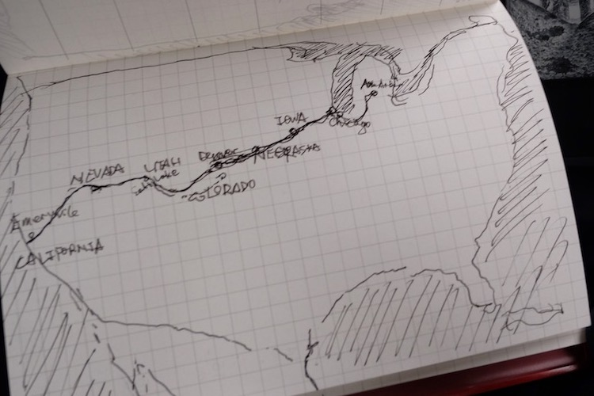
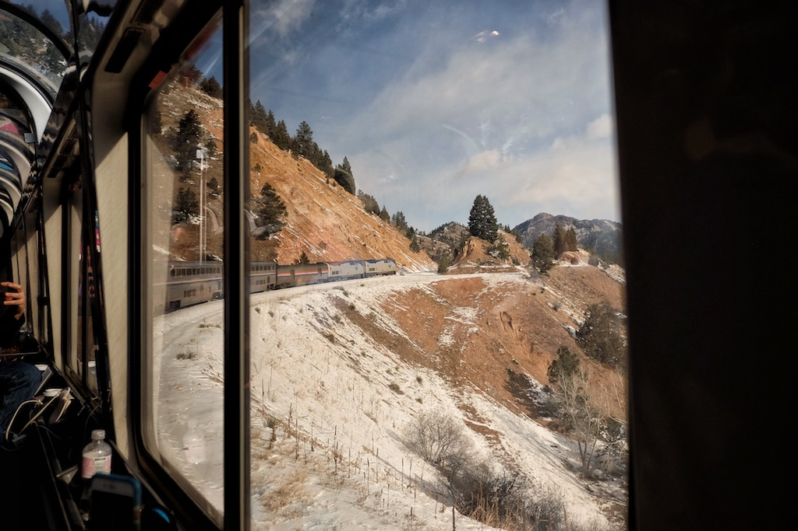
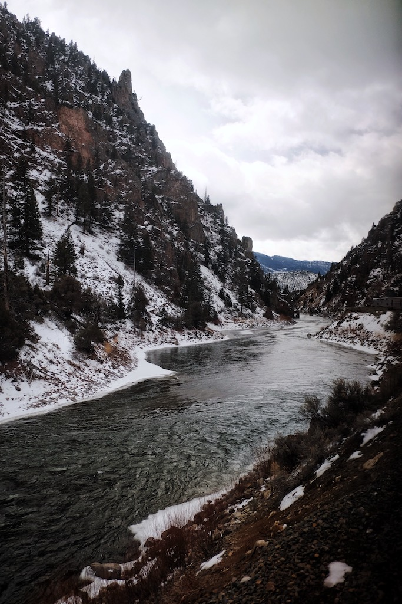
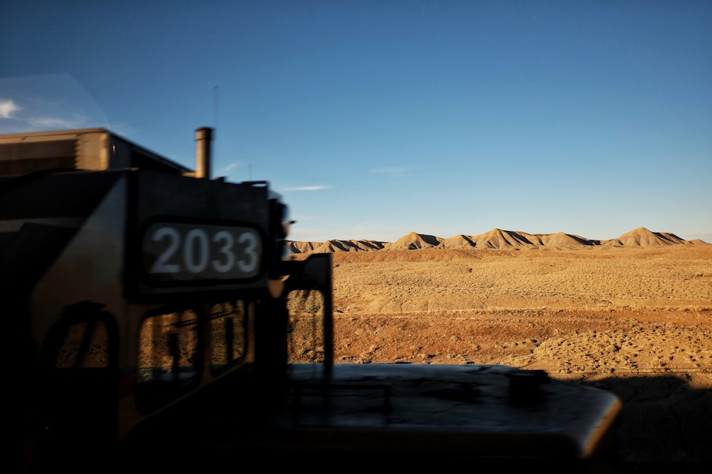
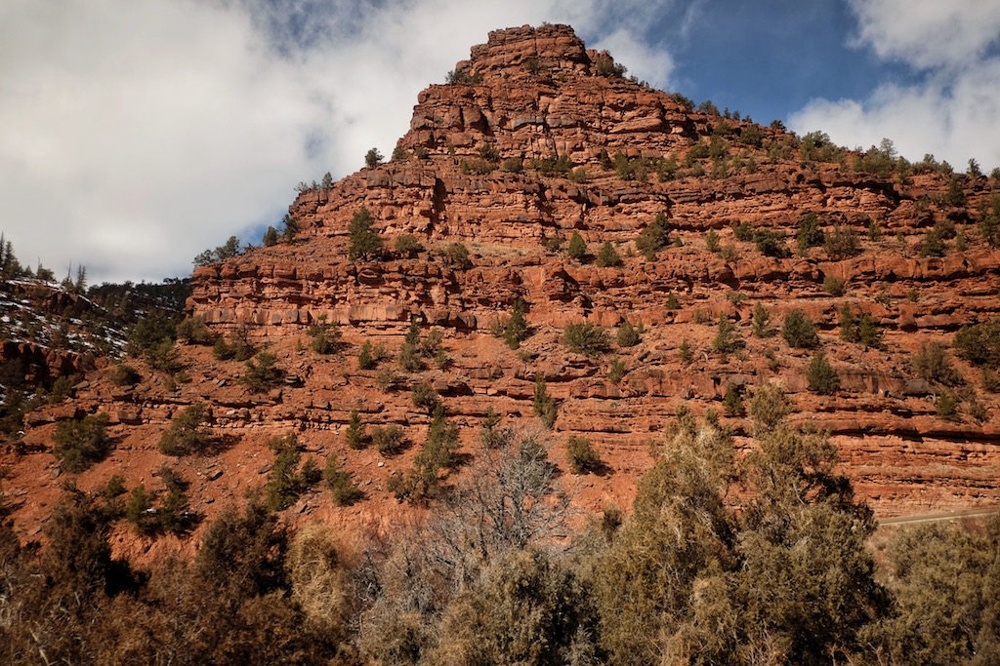
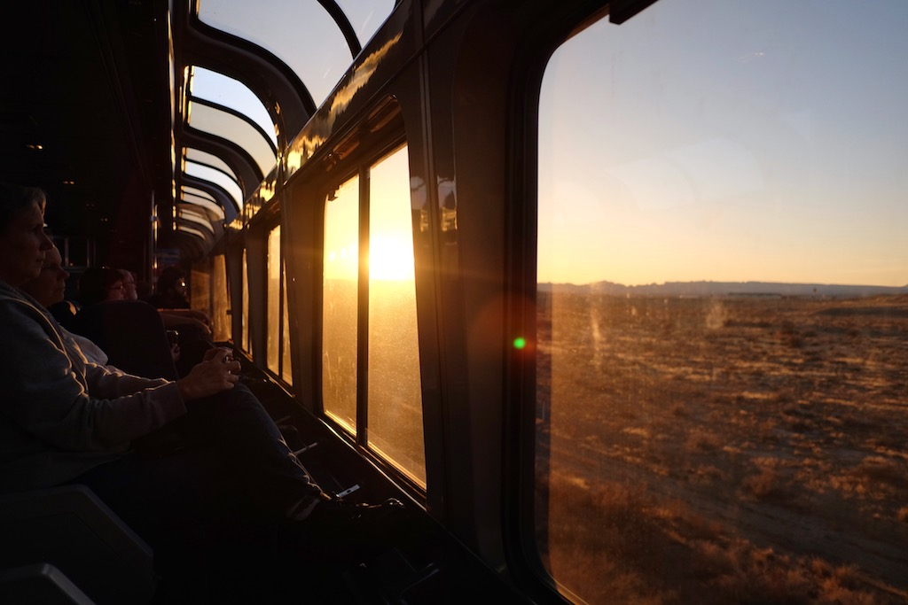
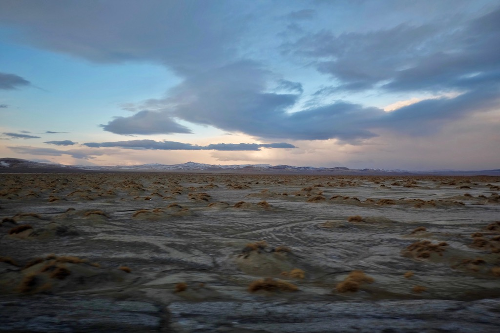

This February, I took a solo railway trip from
Ann Arbor to San Francisco.
Yes, I know I'm crazy.
The train I ride is California Zephyr, which runs daily between Chicago and Emeryville, via Omaha, Denver, Salt Lake City, and Reno.






